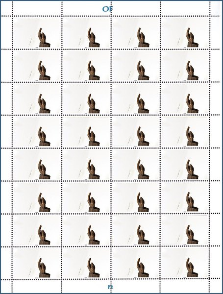
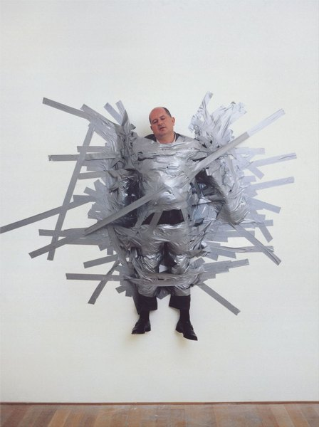
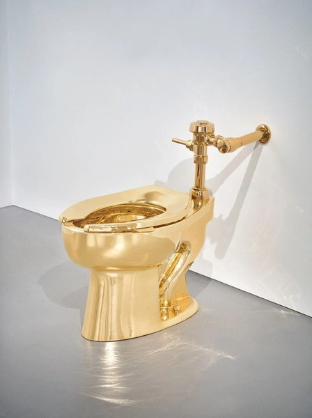
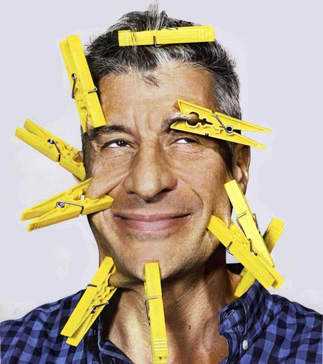
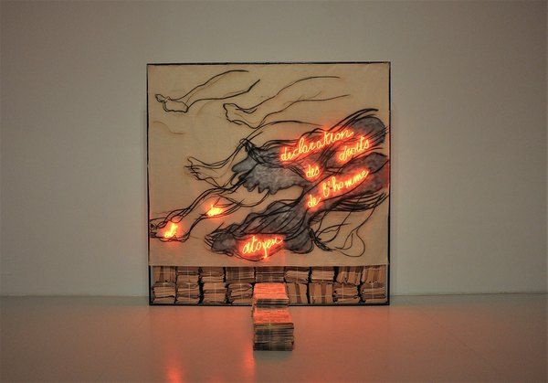
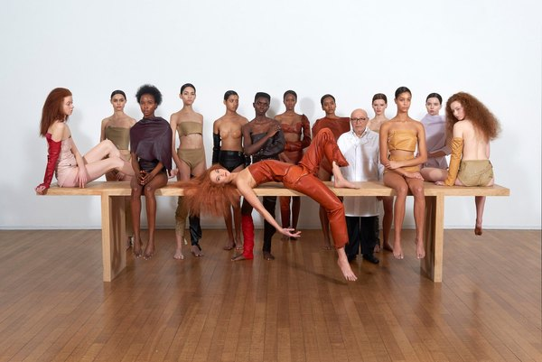
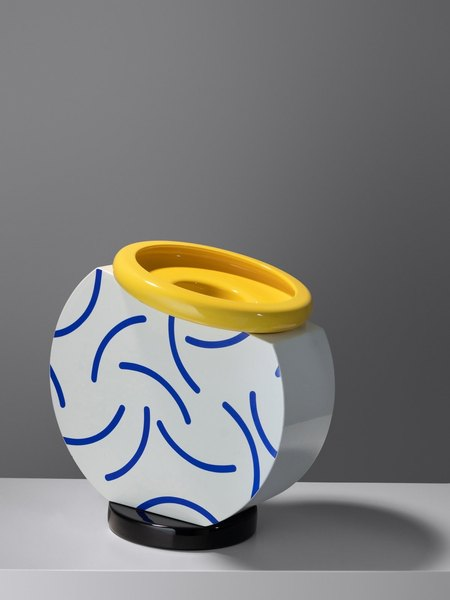
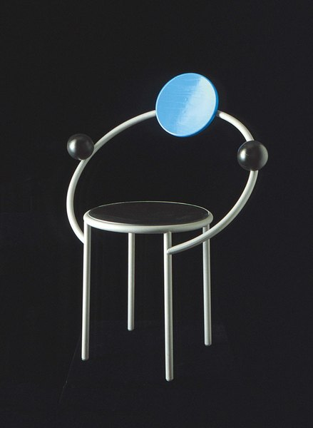

CRVI001889Alighiero Boetti - Der Himmel über

CRVI000841Ottagono - Ottagono 18
settembre 1970 · anno 5 · 1970
settembre 1970 · anno 5 · 1970

CRVI000377Alvin Lucier - Bird And Person Dyning
Designer unknown · Cramps · 1976
Designer unknown · Cramps · 1976

CRVI002416Filippo Tommaso Marinetti - Vive la France
1914-15
1914-15

CRVI000382Joel Vandroogenbroeck - Images Of Flute In Nature
Designer unknown · Cenacolo · 1978
Designer unknown · Cenacolo · 1978

CRVI001884Michelangelo Pistoletto - Girl Drawing
1979
1979

CRVI002413Filippo Tommaso Marinetti - Treni (parole in libertà)

CRVI001423Maurizio Cattelan - A Perfect Day
1999
1999

CRVI001685Gino Severini - Dynamism of a Dancer
1912
1912

CRVI001421Maurizio Cattelan - America
2016
2016

CRVI000914Vittoria Necchi Societa per Azioni - N
Trademark · Sewing Machines · Pavia, Italy · designer unknown · 1952
Trademark · Sewing Machines · Pavia, Italy · designer unknown · 1952

CRVI002414Filippo Tommaso Marinetti - Zang Tumb Tuuum
1915
1915

CRVI002417Filippo Tommaso Marinetti - Words and Freedom (Parole in libertà)
1914
1914

CRVI001701Benedetta Cappa - Grand X
1931
1931

CRVI001702Benedetta Cappa - Ironia
1930
1930

CRVI001885Michelangelo Pistoletto - Deposizione
1973
1973

CRVI001886Michelangelo Pistoletto - Standing Man (mirror painting)
1962
1962

CRVI001674Giacomo Balla - Dynamism of a Dog on a Leash
1912
1912

CRVI001422Unidentified - Portrait of Maurizio Cattelan

CRVI001454Nathalie Du Pasquier - Untitled
2013
2013

CRVI001684Gino Severini - Self-Portrait
1912
1912

CRVI000837Ottagono - Ottagono 66
settembre 1982 · anno 17 · 1982
settembre 1982 · anno 17 · 1982

CRVI001679Carlo Carrà - Portrait of Marinetti
1915
1915

CRVI001691Luigi Russolo - La Rivolta
1911
1911

CRVI000840Ottagono - Ottagono 70
settembre 1983 · anno 18 · 1983
settembre 1983 · anno 18 · 1983

CRVI001690Luigi Russolo - Chioma
1910–1911
1910–1911

CRVI000847domus - domus 1112
May 2026 · 2026
May 2026 · 2026

CRVI000843domus - domus 1109
February 2026 · 2026
February 2026 · 2026

CRVI001675Giacomo Balla - Self-Portrait
1902
1902

CRVI001694Filippo Tommaso Marinetti - Parole in libertà
1932
1932

CRVI000229Paolo Achenza Trio - Do It
Designer unknown · Right Tempo · 1994
Designer unknown · Right Tempo · 1994

CRVI001693Filippo Tommaso Marinetti - Les mots en liberté futuristes
Book · 1919
Book · 1919

CRVI001677Carlo Carrà - The Red Horseman
1913
1913

CRVI001681Carlo Carrà - Stazione a Milano
1909
1909

CRVI000838Ottagono - Ottagono 62
settembre 1981 · 1981
settembre 1981 · 1981

CRVI002415Filippo Tommaso Marinetti - Zang Tumb Tumb: Adrianopoli Ottobre 1912: Parole in Libertà (cover)
1914
1914

CRVI001697Filippo Tommaso Marinetti - Parole in libertà: Verbalisation dynamique de la route

CRVI001933Sandro Chia - Surprising Novel, Chapter Four

CRVI002102Piero Manzoni - Merda d'artista (Artist's Shit)
1961
1961

CRVI001414Giorgio de Chirico - Gentiluomo in villeggiatura
Giorgio de Chirico · date unrecorded
Giorgio de Chirico · date unrecorded

CRVI001676Carlo Carrà - Swimmers
1912
1912

CRVI001698Filippo Tommaso Marinetti - Futurismo
Poster · 1932
Poster · 1932

CRVI002412Filippo Tommaso Marinetti - TUMB TUMB / GRANG GRANG / ZZZANG-ZZZANG-TUMB

CRVI001399Giorgio de Chirico - The Two Masks
Giorgio de Chirico · 1926 · 1926
Giorgio de Chirico · 1926 · 1926

CRVI001562Giorgio de Chirico - The Gentle Afternoon
1916
1916

CRVI002101Lucio Fontana - Concetto Spaziale, Attese

CRVI001672Giacomo Balla - Girl Running on a Balcony
1912
1912

CRVI001671Giacomo Balla - Iridescent Interpenetration No. 4, Study of Light
1912
1912

CRVI000844domus - domus 690
gennaio 1988 · 1988
gennaio 1988 · 1988

CRVI001932Francesco Clemente - Hand with a map

CRVI000639Maurizio Cattelan, Pierpaolo Ferrari - VICE, March
VICE, March 2016 · 2016
VICE, March 2016 · 2016

CRVI000845domus - domus 1111
April 2026 · 2026
April 2026 · 2026

CRVI000842Ottagono - Ottagono 80
marzo 1986 · anno 21 · 1986
marzo 1986 · anno 21 · 1986

CRVI001699Benedetta Cappa - Motorboat
1923
1923

CRVI001683Gino Severini - Ballerina in Blue
1912
1912

CRVI000836Ottagono - Ottagono 72
marzo 1984 · anno 19 · 1984
marzo 1984 · anno 19 · 1984

CRVI001890Alighiero Boetti - Embroidered word square

CRVI000846domus - domus 1114
July–August 2026 · 2026
July–August 2026 · 2026

CRVI001695Ivo Pannaggi - Treno in corsa

CRVI001682Gino Severini - Untitled (Futurist crowd)
1911
1911

CRVI001420Maurizio Cattelan - The Confessional
2026
2026

CRVI001887Mario Merz - Installation view, Palacio de Velázquez, Madrid

CRVI001943Vanessa Beecroft - Performance, long table

CRVI001944Vanessa Beecroft - Performance, seated group

CRVI001680Carlo Carrà - The Drunken Gentleman
1916
1916

CRVI001687Luigi Russolo - Autoritratto con teschi
1908
1908

CRVI001398Giorgio de Chirico - The Disquieting Muses
Giorgio de Chirico · 1918 · 1918
Giorgio de Chirico · 1918 · 1918

CRVI001394Giorgio de Chirico - The Seer
Giorgio de Chirico · 1914 · 1914
Giorgio de Chirico · 1914 · 1914

CRVI001396Giorgio de Chirico - The Evil Genius of a King
Giorgio de Chirico · 1914 · 1914
Giorgio de Chirico · 1914 · 1914

CRVI001413Giorgio de Chirico - Il continente misterioso
Giorgio de Chirico · 1968 · 1968
Giorgio de Chirico · 1968 · 1968

CRVI001397Giorgio de Chirico - The Enigma of a Day
Giorgio de Chirico · 1914 · 1914
Giorgio de Chirico · 1914 · 1914

CRVI001692Luigi Russolo - Souvenir d'une nuit (Memories of a Night)
1911
1911

CRVI001673Giacomo Balla - Street Light
1909
1909

CRVI001395Giorgio de Chirico - The Red Tower
Giorgio de Chirico · 1913 · 1913
Giorgio de Chirico · 1913 · 1913

CRVI002029Rudolf Stingel - Untitled
2023
2023

CRVI001678Gino Severini - Armored Train in Action
1915
1915

CRVI001412Giorgio de Chirico - The Uncertainty of the Poet
Giorgio de Chirico · 1913 · oil on canvas · Tate · 1913
Giorgio de Chirico · 1913 · oil on canvas · Tate · 1913

CRVI001703Mario Sironi - The Lamp
1919
1919

CRVI001561Giorgio de Chirico - Melancholy of Departure
1916
1916

CRVI001700Benedetta Cappa - Lights
1924
1924

CRVI001393Giorgio de Chirico - The Song of Love
Giorgio de Chirico · 1914 · 1914
Giorgio de Chirico · 1914 · 1914

CRVI001686Gino Severini - The Haunting Dancer
1911
1911

CRVI001689Luigi Russolo - Synthèse plastique des mouvements d'une femme

CRVI001688Luigi Russolo - Profumo
1910
1910

CRVI001888Alighiero Boetti - Untitled

CRVI000839Ottagono - Ottagono 77
giugno 1985 · anno 20 · 1985
giugno 1985 · anno 20 · 1985

CRVI001883Michelangelo Pistoletto - Venus of the Rags
1967
1967

CRVI001455Martine Bedin - Cucumber
Vase · Memphis · 1985
Vase · Memphis · 1985

CRVI001670Umberto Boccioni - Self-Portrait
1905
1905

CRVI001453Michele De Lucchi - First
Chair · Memphis · 1983
Chair · Memphis · 1983